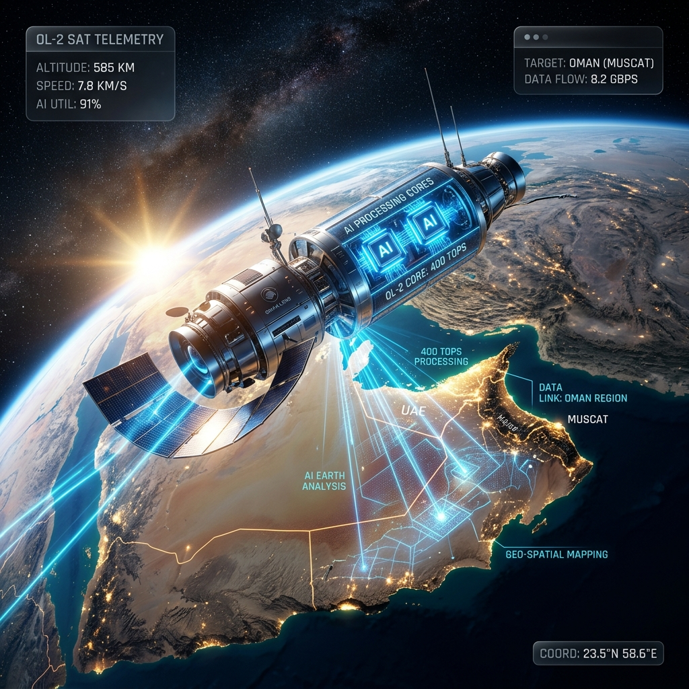

عمان لينس OL-2: ثورة الذكاء الاصطناعي الفضائي
تحليل لمهمة القمر الصناعي العماني الثاني وقوة معالجته الهائلة التي تبلغ 400 تريليون عملية في الثانية.

تتسارع خطى سلطنة عمان في اقتصاد الفضاء العالمي بشكل مذهل. فبعد الإطلاق الناجح لأول قمر صناعي لها، OL-1، في أواخر عام 2024، أعلنت شركة "عمان لينس" (Oman Lens) العمانية الرائدة عن المهمة القادمة OL-2. وتمثل هذه المهمة قفزة نوعية، حيث تضم منصة ذكاء اصطناعي قادرة على إجراء أكثر من 400 تريليون عملية في الثانية (TOPS).
بالنسبة لقادة الأعمال والمخططين الحضريين في عمان، فإن OL-2 ليس مجرد جهاز في المدار؛ إنه محرك بيانات في الوقت الفعلي يعد بتحويل كيفية مراقبة بنيتنا التحتية الوطنية، وإدارة مواردنا الطبيعية، والاستجابة للتحديات البيئية مثل الفيضانات المفاجئة.
لماذا تعد قوة المعالجة 400 TOPS علامة فارقة؟
تسمح قوة المعالجة الهائلة لـ OL-2 بتحليل الصور عالية الدقة في الوقت الفعلي داخل المدار، مما يؤدي إلى تصفية البيانات غير المفيدة (مثل السحب) قبل وصولها إلى المحطة الأرضية.
غالباً ما تعاني الأقمار الصناعية التقليدية من "عنق زجاجة" في نقل البيانات؛ فهي تلتقط كميات هائلة من الصور الخام وترسلها إلى الأرض لمعالجتها. عمان لينس OL-2 يغير هذا النموذج. فمن خلال إجراء الحسابات المعقدة في الفضاء، يمكن للقمر الصناعي تحديد ميزات محددة—مثل مبنى قيد الإنشاء أو ارتفاع منسوب المياه—وإرسال الرؤى عالية القيمة فقط. هذا يقلل من زمن الاستجابة من ساعات إلى ثوانٍ ويخفض تكاليف نقل البيانات بنسبة تزيد عن 80%.
المواصفات الفنية الرئيسية لـ OL-2
- سرعة المعالجة: أكثر من 400 TOPS (تريليون عملية في الثانية).
- دقة التصوير: دقة مكانية تصل إلى 50 سم.
- القنوات الطيفية: RGB + الأشعة تحت الحمراء القريبة (NIR) للمراقبة البيئية.
- موعد الإطلاق: مستهدف في النصف الأول من عام 2026.
كيف سيفيد OL-2 قطاعي التخطيط الحضري والبيئة في عمان؟
سيوفر OL-2 بيانات دقيقة للغاية للتنبؤ بالفيضانات، وتخطيط الشوارع، ومراقبة الغطاء النباتي في جميع أنحاء السلطنة بدقة تقل عن المتر.
الدقة العالية (50 سم) تعني أن القمر الصناعي يمكنه التمييز بين السيارات الفردية في الشارع أو تحديد أنواع محددة من الغطاء النباتي في محافظة ظفار. بالنسبة للبلديات العمانية، يترجم هذا إلى بيانات تخطيط حضري فورية. ولخدمات الطوارئ، فإن قدرة الذكاء الاصطناعي على التنبؤ بأنماط الفيضانات بناءً على بيانات طيفية فورية يمكن أن تنقذ الأرواح.
| التطبيق | الطريقة التقليدية | ميزة عمان لينس OL-2 |
|---|---|---|
| مراقبة الفيضانات | أجهزة استشعار أرضية + بيانات فضائية متأخرة | كشف فوري لمنسوب المياه بالذكاء الاصطناعي في المدار |
| التخطيط الحضري | مسوحات يدوية / صور منخفضة الدقة | خرائط مدعومة بالذكاء الاصطناعي بدقة 50 سم |
| صحة الغطاء النباتي | أخذ عينات ميدانية / جولات جوية دورية | تحليل مستمر بالأشعة تحت الحمراء القريبة |
| أمن البنية التحتية | دوريات في الموقع | كشف تلقائي للتغيرات غير المصرح بها في المواقع |
توافق تكنولوجيا الفضاء مع رؤية عمان 2040
يعد "عمان لينس OL-2" حجر زاوية في طموح السلطنة لبناء قطاع فضاء يعتمد على الذات ويساهم في الناتج المحلي الإجمالي والسيادة التكنولوجية.
من خلال تطوير أقمار صناعية عالية القدرة الحسابية، تضع عمان نفسها كمركز إقليمي للمعلومات الجيومكانية. تدعم هذه المهمة رؤية عمان 2040 من خلال بناء اقتصاد قائم على المعرفة. كما أن التعاون مع شركاء إقليميين مثل الهيئة الوطنية لعلوم الفضاء بالبحرين يؤكد ريادة عمان في التعاون الفضائي الخليجي.
"OL-2 ليس مجرد قمر صناعي؛ إنه حاسوب فائق متنقل في الفضاء. إنه يمثل التزامنا بقيادة المنطقة في استكشاف الفضاء المدعوم بالذكاء الاصطناعي." - ممثل من عمان لينس
تجهيز الشركات العمانية لطفرة بيانات الفضاء
مع اقتراب موعد إطلاق OL-2، يجب على الشركات العمانية في قطاعات اللوجستيات، والإنشاءات، والزراعة البدء في استكشاف كيفية دمج رؤى الذكاء الاصطناعي المستمدة من الأقمار الصناعية في عملياتها. ستكون القدرة على تلقي تنبيهات فورية بدقة 50 سم ميزة تنافسية كبرى. نحن في AI Profit Lab نؤمن بأن تقاطع تكنولوجيا الفضاء والذكاء الاصطناعي الأرضي سيحدد العقد القادم من الكفاءة في السلطنة.
استراتيجية بيانات الفضاء للمديرين
يجب على المديرين تقييم اعتمادهم الحالي على المراقبة الأرضية. مع ظهور OL-2، من المتوقع أن تنخفض تكلفة مراقبة المساحات الواسعة بشكل كبير. الآن هو الوقت المناسب للتخطيط لاستراتيجية جيومكانية متكاملة مع الذكاء الاصطناعي.
الأسئلة الشائعة
ما هو قمر "عمان لينس OL-2"؟
هو القمر الصناعي العماني الثاني لرصد الأرض، ويتميز بمعالجة متقدمة للذكاء الاصطناعي داخل المدار لتحليل البيانات في الوقت الفعلي.
ماذا يعني "400 TOPS"؟
يرمز إلى "تريليون عملية في الثانية"، وهو مقياس لقوة الحوسبة الهائلة التي يستخدمها القمر الصناعي لتشغيل خوارزميات الذكاء الاصطناعي في الفضاء.
ما هي دقة تصوير OL-2؟
يلتقط القمر الصناعي صوراً بدقة 50 سم، مما يعني أنه يمكنه رؤية أشياء صغيرة مثل نصف متر على الأرض.
كيف سيساعد OL-2 في مراقبة الفيضانات؟
يمكن للذكاء الاصطناعي اكتشاف ارتفاع مستوب المياه والتنبؤ بمسارات الفيضانات فورياً، مما يوفر تحذيرات مبكرة لخدمات الطوارئ.
متى سيتم إطلاق القمر الصناعي؟
من المستهدف الإطلاق في النصف الأول من عام 2026، بناءً على نجاح مهمة OL-1.
من هي الجهة المطورة لمشروع عمان لينس؟
"عمان لينس" هي شركة عمانية خاصة متخصصة في تكنولوجيا الفضاء، وتعمل بتوافق مع الاستراتيجيات الوطنية الرقمية والفضائية.
هل يمكن للقمر الصناعي الرؤية من خلال السحب؟
بينما يستخدم مستشعرات بصرية، فإن خوارزميات الذكاء الاصطناعي فيه مصممة لتصفية المناطق المغطاة بالسحب لتوفير النطاق الترددي والتركيز على البيانات الواضحة.
فيم تستخدم تقنية الأشعة تحت الحمراء القريبة (NIR)؟
تعد تقنية NIR ضرورية لمراقبة صحة النباتات ومستويات الرطوبة التي لا يمكن للعين البشرية رؤيتها.
هل ستكون البيانات متاحة للشركات الخاصة؟
تهدف "عمان لينس" إلى توفير خدمات المعلومات الجيومكانية لكل من القطاعين الحكومي والخاص في دول الخليج.
كيف يساهم OL-2 في رؤية 2040؟
يدفع بالابتكار التقني، ويبني القدرات الفضائية المحلية، ويخلق فرص عمل عالية القيمة في اقتصاد المعرفة في السلطنة.